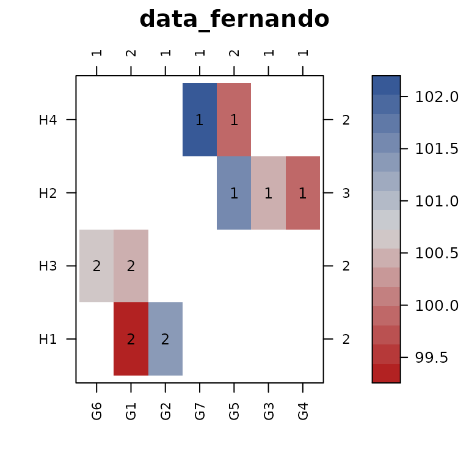

Introduction to the 'connected' package
Kevin Wright
introduction_to_the_connected_package.RmdIntroduction
The connected package arose from our experience
analyzing data with linear models and linear mixed models. Sometimes
those models failed to converge, and when the reason for the convergence
was investigated, it sometimes turned out to be either that that the
data was not connected or else was weakly connected.
The main functions in the connected package are:
Visualizing two-way connectedness with con_view()
To illustrate the idea of connectedness, consider the following example data from Fernando et al. (1983) that is inspired by the cattle industry
library(connected)
data_fernando
#> gen herd
#> 1 G2 H1
#> 2 G1 H1
#> 3 G1 H3
#> 4 G6 H3
#> 5 G3 H2
#> 6 G4 H2
#> 7 G5 H2
#> 8 G5 H4
#> 9 G7 H4There are 2 factors: genotype and herd. Each row represents one animal in a herd. Although this data does not have a response variable, we can simulate a response variable and then see if the data could be analyzed by a linear model with the 2 factors.
set.seed(42)
data_fernando <- transform(data_fernando, y = rnorm(nrow(data_fernando), mean=100))
m1 <- lm(y ~ gen + herd, data=data_fernando)
m1
#>
#> Call:
#> lm(formula = y ~ gen + herd, data = data_fernando)
#>
#> Coefficients:
#> (Intercept) genG2 genG3 genG4 genG5 genG6
#> 99.4353 1.9357 -0.6372 -1.1476 0.4700 0.2697
#> genG7 herdH2 herdH3 herdH4
#> 2.5831 1.6062 0.9278 NAWhile there are no warnings, looking at the model coefficients shows
that the estimate of the effect for herd H4 is not
estimable. This happens because the model matrix is not full rank. To
understand why, look at the following graphical view of the data in a
levelplot:
con_view(data_fernando, y ~ gen * herd, main="data_fernando")
#> Warning in con_view(data_fernando, y ~ gen * herd, main = "data_fernando"):
#> There are 2 groups
The con_view() function does the following:
- Plots a levelplot/heatmap of the two factors, with the cell color corresponding to the value of the response variable.
- Counts the number of cells in each row and puts this count on the right axis. Column counts are added along the top axis.
- Sorts the rows and columns (by default) according to clustering of the incidence matrix based on the presence/absence of data in each cell of the graph.
- Checks for connectivity of the two factors. If the observations are NOT connected, then cells belonging to the same connected subset are identified with a number.
This graphical view shows us that herds H1 and
H3 have no levels of the genotype factor that are in common
with herds H2 and H4, so it makes sense that
not all herd effects will be estimable.
Checking multi-way connectedness with con_check()
The two-way heatmaps in the previous section are very useful to understand connectedness of two factors, but what if there are more than two factors?
Here is a small example dataset from Eccleston and Russell (1975) with three factors that can represent a 4x4 row-column experiment with a treatment for each cell.
data_eccleston
#> row col trt
#> 1 1 1 A1
#> 2 1 2 B2
#> 3 1 3 E5
#> 4 1 4 F6
#> 5 2 1 C3
#> 6 2 2 D4
#> 7 2 3 G7
#> 8 2 4 H8
#> 9 3 1 H8
#> 10 3 2 F6
#> 11 3 3 A1
#> 12 3 4 C3
#> 13 4 1 G7
#> 14 4 2 E5
#> 15 4 3 B2
#> 16 4 4 D4The treatment codes have both a letter and a number only because both have been used in previously-published scientific papers. Each treatment letter corresponds with one number and vice versa. Re-arranging the treatments into the field layout of rows and columns is useful:
## library(reshape2)
## acast(data_eccleston, row~col, value.var='trt')
## 1 2 3 4
## 1 A1 B2 E5 F6
## 2 C3 D4 G7 H8
## 3 H8 F6 A1 C3
## 4 G7 E5 B2 D4The 4x4 grid is completely filled, so the row and column factors are
obviously connected. With a little bit of study, it can be seen that the
columns are also connected via the treatments. For example treatment
A1 appears in columns 1 & 3, treatment B2
connects columns 3 & 2, D4 connects columns 2 & 4,
and C3 connects columns 4 & 1. The connection of
treatments and columns can be checked formally with the
con_check() function:
con_check(data_eccleston, ~ trt + col)
#> [1] 1 1 1 1 1 1 1 1 1 1 1 1 1 1 1 1
#> Levels: 1The vector of 1s returned means that all observations of
the dataframe are connected in group 1.
Similarly, the rows are also connected via the treatments.
con_check(data_eccleston, ~ trt + row)
#> [1] 1 1 1 1 1 1 1 1 1 1 1 1 1 1 1 1
#> Levels: 1However, if all 3 factors are considered at the same time, they are completely disconnected with each observation belonging to a separate group.
con_check(data_eccleston, ~ trt + row + col)
#> [1] 16 1 2 3 4 5 6 7 8 9 10 11 12 13 14 15
#> Levels: 1 2 3 4 5 6 7 8 9 10 11 12 13 14 15 16If we attempted to fit a linear model using all 3 factors as predictors, there would be problems with estimability.
set.seed(42)
data_eccleston <- transform(data_eccleston,
y = rnorm(nrow(data_eccleston), mean=100))
m1 <- lm(y ~ trt + row + col, data=data_eccleston)
m1
#>
#> Call:
#> lm(formula = y ~ trt + row + col, data = data_eccleston)
#>
#> Coefficients:
#> (Intercept) trtB2 trtC3 trtD4 trtE5 trtF6
#> 100.78962 -0.18428 -0.11760 0.30450 0.20690 -0.72684
#> trtG7 trtH8 row2 row3 row4 col2
#> -0.22508 -0.50118 -0.06302 1.09660 -0.94338 -0.96532
#> col3 col4
#> NA 0.31332Another way to examine the stability of the model is to look at the reciprocal condition number of the model matrix, which is less than the machine precision, so it is numerically singular.
X <- model.matrix(m1)
rcond(X)
#> [1] 1.311474e-17
.Machine$double.eps
#> [1] 2.220446e-16Improving connectedness with con_filter()
Sometimes two factors of a dataframe can be weakly connected and we might want to remove those weak connections.
Example 1
We construct a small example and use the tabyl function
to display the data in a two-way table.
tab <- data.frame(gen=c("G1","G1","G1","G1", "G2","G2","G2", "G3"),
state=c("S1","S2","S3","S4", "S1","S2","S4", "S1"))
library(janitor) # For tabyl
#>
#> Attaching package: 'janitor'
#> The following objects are masked from 'package:stats':
#>
#> chisq.test, fisher.test
tab %>% tabyl(state,gen)
#> state G1 G2 G3
#> S1 1 1 1
#> S2 1 1 0
#> S3 1 0 0
#> S4 1 1 0In the two-way table it is easy to see that the gen
factor level G3 has only 1 cell connecting to the
state factor. We might want to eliminate the column with
genotype G3. The ordinary way to do this would be to use
one of these approaches:
subset(tab, gen != "G3") %>% tabyl(state,gen)
#> state G1 G2
#> S1 1 1
#> S2 1 1
#> S3 1 0
#> S4 1 1
dplyr::filter(tab, gen != "G3") %>% tabyl(state,gen)
#> state G1 G2
#> S1 1 1
#> S2 1 1
#> S3 1 0
#> S4 1 1We generalize the idea of filtering to a new two-way filtering using
the con_filter() function. The easiest way to think about
this function is with a two-way table as shown above, and then to define
a threshold for the minimum number of connections between two factors.
For example, we might decide to only keep a level of gen if
it appears in at least 2 states. We use a formula syntax
for this.
# Read this as "2 state per gen"
tab2 <- con_filter(tab, ~ 2 * state / gen)
#> Dropping these 1 of 3 levels of gen:
#> [1] "G3"
#> Deleted 1 of 8 rows of data.
#> Warning in con_filter(tab, ~2 * state/gen): Some state have only 1 gen.
tab2 %>% tabyl(state,gen)
#> state G1 G2
#> S1 1 1
#> S2 1 1
#> S3 1 0
#> S4 1 1By default, the con_filter() function provides a bit of
diagnostic information.
After the filtering, notice that state S3
only appears once and we decide that we only want to keep an individual
state if it has at least 2 gen.
con_filter(tab2, ~ 2 * gen / state) %>% tabyl(state, gen)
#> Dropping these 1 of 4 levels of state:
#> [1] "S3"
#> Deleted 1 of 7 rows of data.
#> state G1 G2
#> S1 1 1
#> S2 1 1
#> S4 1 1Example 2 - Missing response values
The R dataset OrchardSprays is an example of a Latin
Square experiment with 8 rows, 8 columns, and 8 treatments. Suppose that
during the experiment, half of the response variable data was lost. We
simulate that:
set.seed(42)
orch <- OrchardSprays
orch[runif(nrow(orch)) > .5 , "decrease"] <- NA
head(orch)
#> decrease rowpos colpos treatment
#> 1 NA 1 1 D
#> 2 NA 2 1 E
#> 3 8 3 1 B
#> 4 NA 4 1 H
#> 5 NA 5 1 G
#> 6 NA 6 1 FIn order to visualize the combinations of rows and columns that still have data, we have to remove the missing observations before constructing a table of cell counts:
subset(orch, !is.na(decrease)) %>% tabyl(rowpos, colpos)
#> rowpos 1 2 3 4 5 6 7 8
#> 1 0 0 0 1 1 1 0 0
#> 2 0 0 1 0 0 1 0 1
#> 3 1 1 1 1 1 1 1 1
#> 4 0 0 0 0 0 0 1 0
#> 5 0 0 0 1 1 1 1 0
#> 6 0 1 1 0 1 0 0 0
#> 7 0 1 0 0 0 0 1 0
#> 8 1 0 0 0 0 0 0 0The con_filter() formula syntax can include a response
variable. If the response variable is specified, the data is first
filtered to remove missing values in the response, and then the two-way
filtering is performed. Suppose we want to have at least 2 observed
values of decrease in each row and column
# Read: decrease has at least 2 colpos per rowps
orch2 <- con_filter(orch, decrease ~ 2 * colpos / rowpos)
#> Dropping these 2 of 8 levels of rowpos:
#> [1] "4" "8"
#> Deleted 2 of 25 rows of data.
#> Warning in con_filter(orch, decrease ~ 2 * colpos/rowpos): Some colpos have
#> only 1 rowpos.
tabyl(orch2, rowpos, colpos) # Column 1 has only 1 observation
#> rowpos 1 2 3 4 5 6 7 8
#> 1 0 0 0 1 1 1 0 0
#> 2 0 0 1 0 0 1 0 1
#> 3 1 1 1 1 1 1 1 1
#> 5 0 0 0 1 1 1 1 0
#> 6 0 1 1 0 1 0 0 0
#> 7 0 1 0 0 0 0 1 0
# Read: decrease has at least 2 rowpos per colpos
orch2 <- con_filter(orch2, decrease ~ 2 * rowpos / colpos)
#> Dropping these 1 of 8 levels of colpos:
#> [1] "1"
#> Deleted 1 of 23 rows of data.
tabyl(orch2, rowpos, colpos)
#> rowpos 2 3 4 5 6 7 8
#> 1 0 0 1 1 1 0 0
#> 2 0 1 0 0 1 0 1
#> 3 1 1 1 1 1 1 1
#> 5 0 0 1 1 1 1 0
#> 6 1 1 0 1 0 0 0
#> 7 1 0 0 0 0 1 0The desired result has been achieved.
Example 3 - Concatenating two factors
Sometimes you might want to combine two factors together before
filtering. Consider the following example with factor for genotype
gen, state, and year. We simulate
some random response data.
library(connected)
library(janitor)
test1 <- matrix( c("G1", "IA", "2020", # gen has 1 state, 1 yr,
"G2", "IA", "2020", # gen has 1 state, 2 yr
"G2", "IA", "2021",
"G3", "NE", "2020", # 2 states, 1 yr
"G3", "IA", "2020",
"G4", "KS", "2020", # state has 1 gen, 1 yr
"G5", "MO", "2020", # state has 1 gen, 2yr
"G5", "MO", "2021",
"G6", "IL", "2020", # state has 2 gen, 1yr
"G7", "IL", "2020",
"G8", "AR", "2019", # year has 1 gen 1 state
"G9", "IN", "2018", # year has 1 gen, 2 state
"G9", "OH", "2018",
"G10", "MN", "2017", # year has 2 gen, 1 state
"G11", "MN", "2017",
"G12", "MD", "2010", # gen has 2 state, 2 yr, 2 reps
"G12", "MD", "2010",
"G12", "GA", "2011",
"G12", "GA", "2011"), byrow=TRUE, ncol=3)
test1 <- as.data.frame(test1)
colnames(test1) <- c("gen","state","year")
set.seed(42)
test1$y <- round( runif(nrow(test1)), 2)
head(test1)
#> gen state year y
#> 1 G1 IA 2020 0.91
#> 2 G2 IA 2020 0.94
#> 3 G2 IA 2021 0.29
#> 4 G3 NE 2020 0.83
#> 5 G3 IA 2020 0.64
#> 6 G4 KS 2020 0.52As shown in the previous sections, we can check/filter the
gen:state and gen:year factors, but perhaps we
are interested in fitting a model with the three-way interaction
gen:state:year. One way to trim this type of data is to
combine the state:year interaction into a single factor and
then count the number genotypes in that new factor. The
con_filter() function can perform this concatenation of two
factors automatically using the : operator.
con_filter(test1, y ~ 2 * gen / state:year) |>
transform(stateyr=paste0(state,"_",year)) |>
tabyl(gen,stateyr)
#> Dropping these 10 of 13 levels of state:year:
#> [1] "AR2019" "GA2011" "IA2021" "IN2018" "KS2020" "MD2010" "MO2020" "MO2021"
#> [9] "NE2020" "OH2018"
#> Deleted 12 of 19 rows of data.
#> Warning in con_filter(test1, y ~ 2 * gen/state:year): Some gen have only 1
#> state:year.
#> gen IA_2020 IL_2020 MN_2017
#> G1 1 0 0
#> G10 0 0 1
#> G11 0 0 1
#> G2 1 0 0
#> G3 1 0 0
#> G6 0 1 0
#> G7 0 1 0Looking at the results, we can see that each column is one level of
the new state:year factor and that each column has at least
2 genotypes, which is what we asked for.
If we ever want to see what data is dropped during the filtering
process, the returndropped=TRUE argument can be used.
con_filter(test1, y ~ 2 * gen / state:year, returndropped=TRUE)
#> Dropping these 10 of 13 levels of state:year:
#> [1] "AR2019" "GA2011" "IA2021" "IN2018" "KS2020" "MD2010" "MO2020" "MO2021"
#> [9] "NE2020" "OH2018"
#> Deleted 7 of 19 rows of data.
#> Warning in con_filter(test1, y ~ 2 * gen/state:year, returndropped = TRUE):
#> Some gen have only 1 state:year.
#> gen state year y
#> 3 G2 IA 2021 0.29
#> 4 G3 NE 2020 0.83
#> 6 G4 KS 2020 0.52
#> 7 G5 MO 2020 0.74
#> 8 G5 MO 2021 0.13
#> 11 G8 AR 2019 0.46
#> 12 G9 IN 2018 0.72
#> 13 G9 OH 2018 0.93
#> 16 G12 MD 2010 0.94
#> 17 G12 MD 2010 0.98
#> 18 G12 GA 2011 0.12
#> 19 G12 GA 2011 0.47Example 4: Case study: Estimating variance components
Sometimes the observations of a dataset may be connected, but some of
the factor levels may have very weak connections and it might be a good
idea to remove those weak connections. For example, in the documentation
of the ASRtrials package that is helpful for analysis of
genotype-by-environment data, Gezan et al. (2022) write: “In general, we
recommend that a minimum of 5 genotypes should be common between any
pair of trials.” Ultimately, you have to decide how much connection you
want between the factors.
The following example shows how to use the con_filter()
function to remove some of the weak connections between levels of
factors.
In plant breeding, one of the things people like to do is look at how much of the variation in the data is explained by differences between genotypes, years, and locations, typically abbreviated GxYxL. In order to perform this calculation, there must be at least some locations that are repeated across years.
The agridat package has a nice example dataset of barley
testing in Minnesota. There are 6 locations across 49 years with 235
different genotypes. There are 69090 combinations of the 3 factors, but
only 2083 combinations have yield values, so there is a great deal of
sparsity in the data. Nonetheless, we can jump right in and try to fit a
full mixed model with all combinations of the factors.
library(agridat)
library(dplyr)
#>
#> Attaching package: 'dplyr'
#> The following objects are masked from 'package:stats':
#>
#> filter, lag
#> The following objects are masked from 'package:base':
#>
#> intersect, setdiff, setequal, union
dat0 <- agridat::minnesota.barley.yield
if(nrow(dat0) < 2083) stop("Please upgrade the agridat package.")
dat0 <- mutate(dat0, gen=factor(gen), site=factor(site), year=factor(year))
library(lme4)
#> Loading required package: Matrix
m0 <- lmer(yield ~ (1|gen) + (1|site) + (1|year) +
(1|gen:site) + (1|gen:year) + (1|site:year) + (1|gen:site:year),
data=dat0)
summary(m0)
#> Linear mixed model fit by REML ['lmerMod']
#> Formula: yield ~ (1 | gen) + (1 | site) + (1 | year) + (1 | gen:site) +
#> (1 | gen:year) + (1 | site:year) + (1 | gen:site:year)
#> Data: dat0
#>
#> REML criterion at convergence: 14327
#>
#> Scaled residuals:
#> Min 1Q Median 3Q Max
#> -1.17872 -0.16019 -0.00281 0.16630 1.21505
#>
#> Random effects:
#> Groups Name Variance Std.Dev.
#> gen:site:year (Intercept) 24.6416 4.9640
#> gen:year (Intercept) 9.8795 3.1432
#> gen:site (Intercept) 0.8261 0.9089
#> gen (Intercept) 45.9856 6.7813
#> site:year (Intercept) 89.0064 9.4343
#> year (Intercept) 38.0930 6.1719
#> site (Intercept) 42.1995 6.4961
#> Residual 2.6587 1.6306
#> Number of obs: 2083, groups:
#> gen:site:year, 2079; gen:year, 1056; gen:site, 429; gen, 235; site:year, 164; year, 49; site, 6
#>
#> Fixed effects:
#> Estimate Std. Error t value
#> (Intercept) 34.691 3.047 11.38
# Note, the asreml package gives the same estimates. Not shown.
# library(asreml)
# m0a <- asreml(yield ~ 1, data=dat0, random = ~ gen*site*year, workspace="1GB")
# summary(m0a)$varcompThis analysis runs without any obvious problems and may be perfectly acceptable, but keeping in mind the comments about connectedness above, we may want to remove some of the data through two-way filtering.
First, start with a two-way visualization of the sites and years.
# Keep the original data in dat0 and pruned data in dat1
dat1 <- dat0
con_view(dat1, yield~site*year, cluster=FALSE,
xlab="site", ylab="year", main="Minnesota Barley")From 1893 through 1917, barley testing only happened at the St. Paul site (near the University of Minnesota). Since it is not possible to explain how much variation there is across locations when there is only 1 location, it makes sense to eliminate the data from those years with only 1 site.
# Require 2 sites per year
dat1 <- con_filter(dat1, yield ~ 2*site/year)
#> Dropping these 25 of 49 levels of year:
#> [1] "1893" "1894" "1895" "1896" "1897" "1898" "1899" "1900" "1901" "1902"
#> [11] "1903" "1904" "1905" "1906" "1907" "1908" "1909" "1910" "1911" "1912"
#> [21] "1913" "1914" "1915" "1916" "1917"
#> Deleted 731 of 2083 rows of data.
con_view(dat1, yield~gen*year, cluster=FALSE,
xlab="genotype", ylab="year")
Looking across the top, there are some 1s that tell us
some genotypes were tested in only 1 year, so those are not really
helping to estimate variation across years and we decide to drop
those.
# Require 2 year per gen
dat1 <- con_filter(dat1, yield~ 2*year/gen)
#> Dropping these 15 of 62 levels of gen:
#> [1] "241" "244" "558" "611" "2793" "2899" "2928" "4668" "4669" "7010"
#> [11] "7011" "7012" "7013" "7014" "7015"
#> Deleted 50 of 1352 rows of data.
con_view(dat1, yield~gen*year, cluster=FALSE, xlab="gen", ylab="year")After considering how genotypes are spread across years, we can also look at how genotypes are spread across sites.
con_view(dat1, yield~gen*site, cluster=FALSE, xlab="genotype", ylab="site")
Again looking at the numbers across the top axis, some genotypes are tested in only 1 site, so we drop those.
# Drop genotypes tested in only 1 site
dat1 <- con_filter(dat1, yield~ 2*site/gen)
#> Dropping these 10 of 47 levels of gen:
#> [1] "531" "835" "912" "915" "923" "1145" "2947" "3144" "4115" "4116"
#> Deleted 25 of 1302 rows of data.
con_view(dat1, yield~gen*site, cluster=FALSE, xlab="genotype", ylab="site")We check the connectedness of each pair of factors.
con_view(dat1, yield ~ gen*site, cluster=FALSE, xlab="gen", ylab="site")
con_view(dat1, yield ~ gen*year, cluster=FALSE, xlab="gen", ylab="year")
con_view(dat1, yield ~ site*year, cluster=FALSE, xlab="site", ylab="year")The connectedness of genotype and year is still a bit weak, but the other pairs of factors have good connections, so we try to fit the variance components model again.
library(lme4)
m1 <- lmer(yield ~ (1|gen) + (1|site) + (1|year) +
(1|gen:site) + (1|gen:year) + (1|site:year) + (1|gen:site:year), data=dat1)
summary(m1)
#> Linear mixed model fit by REML ['lmerMod']
#> Formula: yield ~ (1 | gen) + (1 | site) + (1 | year) + (1 | gen:site) +
#> (1 | gen:year) + (1 | site:year) + (1 | gen:site:year)
#> Data: dat1
#>
#> REML criterion at convergence: 8434
#>
#> Scaled residuals:
#> Min 1Q Median 3Q Max
#> -1.12837 -0.16942 -0.00168 0.17680 1.33933
#>
#> Random effects:
#> Groups Name Variance Std.Dev.
#> gen:site:year (Intercept) 21.971 4.687
#> gen:year (Intercept) 3.625 1.904
#> gen:site (Intercept) 1.280 1.132
#> site:year (Intercept) 87.412 9.349
#> gen (Intercept) 9.166 3.028
#> year (Intercept) 37.412 6.117
#> site (Intercept) 40.747 6.383
#> Residual 2.163 1.471
#> Number of obs: 1277, groups:
#> gen:site:year, 1274; gen:year, 285; gen:site, 187; site:year, 139; gen, 37; year, 24; site, 6
#>
#> Fixed effects:
#> Estimate Std. Error t value
#> (Intercept) 36.751 3.055 12.03
# asreml converges to the same estimated values, so lmer is just finnicky
# m1a <- asreml(yield ~ 1, data=dat1, random = ~ gen*site*year, workspace="1GB")
# lucid::vc(m1a)The lmer function fails to converge, but the variance
components look reasonable and also asreml is giving the
same estimates (not shown here), so there is probably some convergence
criterion for lmer that is not quite satisfied but is
essentially near the maximum of the likelihood. Changing the convergence
criteria might be helpful, but we can also try increasing the
connectedness of genotype and year, since we noticed that there were
some genotypes that were tested in only 2 years. Change that to require
a minimum of 3 years of testing:
# Require at least 3 year per genotype
dat2 <- con_filter(dat1, yield ~ 3*year / gen)
#> Dropping these 3 of 37 levels of gen:
#> [1] "1189" "1478" "5673"
#> Deleted 25 of 1277 rows of data.
m2 <- lmer(yield ~ (1|gen) + (1|site) + (1|year) +
(1|gen:site) + (1|gen:year) + (1|site:year) + (1|gen:site:year),
data=dat2)
summary(m2)
#> Linear mixed model fit by REML ['lmerMod']
#> Formula: yield ~ (1 | gen) + (1 | site) + (1 | year) + (1 | gen:site) +
#> (1 | gen:year) + (1 | site:year) + (1 | gen:site:year)
#> Data: dat2
#>
#> REML criterion at convergence: 8281.1
#>
#> Scaled residuals:
#> Min 1Q Median 3Q Max
#> -1.12068 -0.16831 -0.00262 0.17584 1.32712
#>
#> Random effects:
#> Groups Name Variance Std.Dev.
#> gen:site:year (Intercept) 22.114 4.703
#> gen:year (Intercept) 3.696 1.923
#> gen:site (Intercept) 1.272 1.128
#> site:year (Intercept) 87.468 9.352
#> gen (Intercept) 9.200 3.033
#> year (Intercept) 37.330 6.110
#> site (Intercept) 41.740 6.461
#> Residual 2.156 1.468
#> Number of obs: 1252, groups:
#> gen:site:year, 1249; gen:year, 279; gen:site, 173; site:year, 139; gen, 34; year, 24; site, 6
#>
#> Fixed effects:
#> Estimate Std. Error t value
#> (Intercept) 36.912 3.084 11.97
# asreml gives the same estimated variance parameters. Not shown.
# m2a <- asreml(yield ~ 1, data=dat2, random = ~ gen*site*year, workspace="1GB")
# summary(m2a)$varcompNow lmer converges without any warnings.
We compare the estimated variance parameters from the initial model
m0 (n=2083 observations) with model m1 and the
final model m2 (n=1252 observations). CAUTION: The
VarCorr function re-orders the terms in the output, so be
careful combining the two tables.
library(lucid)
full_join( select(as.data.frame(VarCorr(m0)), grp, vcov),
select(as.data.frame(VarCorr(m1)), grp, vcov),
by="grp", suffix=c(".0",".1")) %>%
full_join(select(as.data.frame(VarCorr(m2)), grp, vcov),
by="grp", suffix=c(".0",".2")) %>% lucid
#> grp vcov.0 vcov.1 vcov
#> 1 gen:site:year 24.6 22 22.1
#> 2 gen:year 9.88 3.63 3.7
#> 3 gen:site 0.826 1.28 1.27
#> 4 gen 46 9.17 9.2
#> 5 site:year 89 87.4 87.5
#> 6 year 38.1 37.4 37.3
#> 7 site 42.2 40.7 41.7
#> 8 Residual 2.66 2.16 2.16The biggest change in the variance components happens for
gen, which decreases from about 46 to about 9. This is not
particularly surprising. In the full dataset, some of the genotypes were
tested in only a few trials. These genotypes could easily have been
poorly performing or regional check varieties that were not serious
candidates for advancement for further testing. In either case, these
genotypes could have been more variable than the other genotypes in the
data. We are speculating, but based on some degree of personal
experience.
The other thing to note is the similarity of the variance parameters
from models m1 and m2. The similarity
strengthens our belief that while model m1 failed to
converge, it likely was near the optimum likelihood.
Appendix - Infrequently Asked Questions
1. How to extract the sorted axis tick labels from the levelplot
If you want to extract the sorted axis tick labels, assign the graphic to an object and extract the components of interest:
2. How to create consistent axis tick labels across multiple datasets
A user wanted to have the same axis tick labels across several different datasets, even though the datasets might have different factor levels.
First we create two small datasets. Note that only levels
G2 and E2 are common to both datasets.
dd1 <- data.frame(x=rep(c("E1","E2"),2),
y=rep(c("G1","G2"), each=2),
z1=c(1,2,1.5,2.5))
dd2 <- data.frame(x=rep(c("E3","E2"),2),
y=rep(c("G3","G2"), each=2),
z2=c(3,4,3.5,4.5))
dd1
#> x y z1
#> 1 E1 G1 1.0
#> 2 E2 G1 2.0
#> 3 E1 G2 1.5
#> 4 E2 G2 2.5
dd2
#> x y z2
#> 1 E3 G3 3.0
#> 2 E2 G3 4.0
#> 3 E3 G2 3.5
#> 4 E2 G2 4.5Next, create a reference dataframe that contains all of the factor
levels from both dd1 and dd2.
Merge the trait values into this dataframe. When plotting, be sure to
use the dropNA=FALSE options so that factor levels without
trait values are kept and use cluster=FALSE to prevent
re-ordering
dd0 <- merge(dd0, dd1, by=c("x","y"), all.x=TRUE)
dd0 <- merge(dd0, dd2, by=c("x","y"), all.x=TRUE)
library(connected)
con_view(dd0, z1 ~ x * y, cluster=FALSE, dropNA=FALSE, main="dd1")
con_view(dd0, z2 ~ x * y, cluster=FALSE, dropNA=FALSE, main="dd2")3. How to view the axis labels and/or cell group numbers when there are many levels
The best strategy is to send the graphical output to a pdf file and
experiment with the cex arguments of
con_view() to reduce over-plotting. Then open the file in a
good pdf viewer that can zoom and search for text.
Bibliography
Eccleston, J. and K. Russell (1975). Connectedness and orthogonality in multi-factor designs. Biometrika, 62, 341-345. https://doi.org/10.1093/biomet/62.2.341
Fernando, Rohan and D. Gianola and M. Grossman (1983). Identifying All Connected Subsets In A Two-Way Classification Without Interaction. J. of Dairy Science, 66, 1399-1402. Table 1. https://doi.org/10.3168/jds.S0022-0302(83)81951-1
Gezan, Salvador A. and Giovanni Galli and Darren Murray (2022). User’s Manual for ASRtriala v. 1.0.0. Published by VSNi. https://vsni.co.uk/resources/free-software/asrtriala/
Piepho, Hans-Peter. (1994) Missing observations in the analysis of stability. Heredity, 72, 141–145. https://doi.org/10.1038/hdy.1994.20